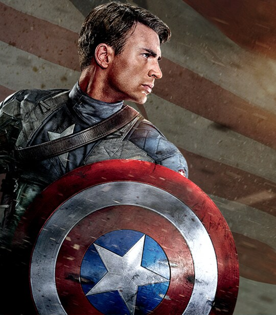

Capitão América
O Primeiro Vingador

"Não são armas e sim Homens, que vão vencer essas Guerras."
Biografia
Steve Rogers, um jovem franzino rejeitado pelo exército na Segunda Guerra Mundial, voluntariou-se para o experimento do "Soro do Super-Soldado". Tornou-se um símbolo de liberdade e liderança dos Vingadores.
Curiosidades
- Seu escudo é feito de Vibranium, o metal mais resistente da Terra.
- Ficou congelado por 70 anos antes de ser encontrado.
- Seu maior rival é o Caveira Vermelha.